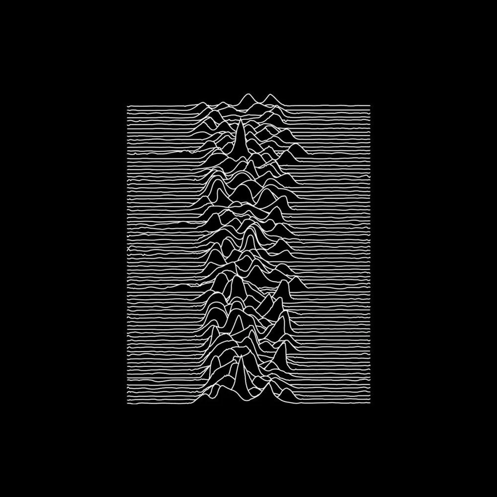

Joy Division, an instant myth

The first band of the Post-Punk movement
Joy Division refined the external chaos of 1970s punk into a disquieting inner turmoil, ushering in the post-punk era. Their first recordings were heavily influenced by early punk, but they later emphasized not anger and energy but rather atmosphere and emotion with a sparse, melancholy style. The band's first gig, on January 25th, 1978, is often credited with kicking off the post-punk era.
Stream More infoJoy Division discography

Joy Division's debut album, described as "a definitive Northern Gothic statement: guilt-ridden, romantic, claustrophobic."
Considered as "the crown jewel of post-punk", this was the band's second and last album, following Ian Curtis' untimely passing.
Joy Division was one of rock music's most influential bands. Get their albums or stream their music now.